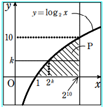

解答・解説[5](2)
\(直線 y=k と曲線 y=\log_2 x の交点のx座標は2^k\)
\(よって、k＝0,1,2,3,……,10に対して\)
\(直線 y=k 上でPの内部および境界線上にある格子点の個数は 20^{10}-2^k+1 個だから\)
\(求める格子点の個数は全部で\)

\begin{eqnarray*}
\sum_{k=0}^{10} (2^{10}-2^k+1) &=& 2^{10}+\sum_{k=0}^{10} (20^{10}+1-2^k)\\
&=& 2^{10}+10・(2^{10}+1)-\frac{2(2^{10}-1)}{2-1}\\
&=& 9・2^{10}+12\\
&=&9228
\end{eqnarray*}
\(よって、9228個\)
戻る